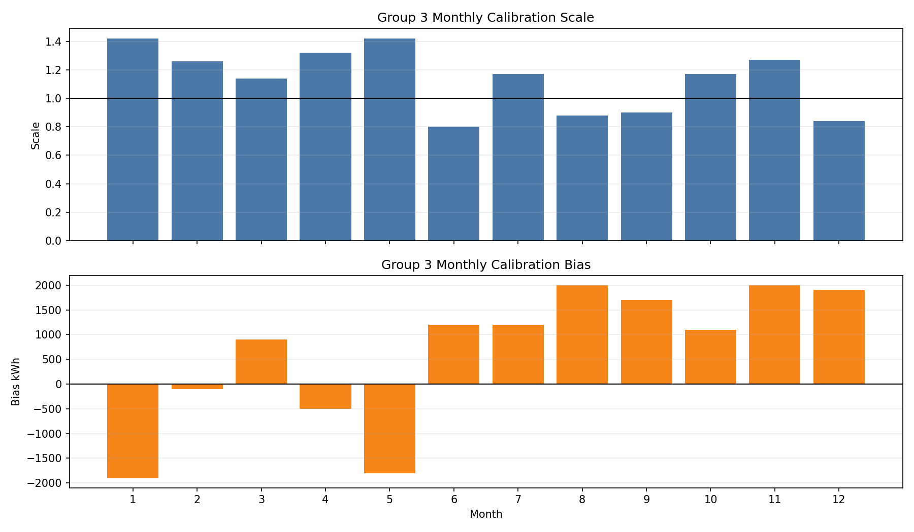
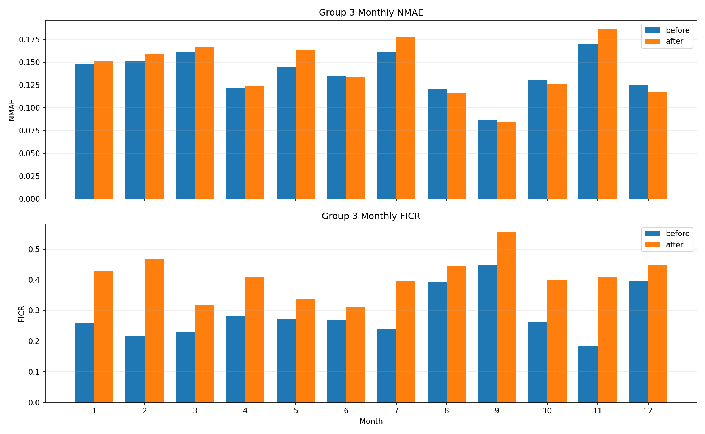
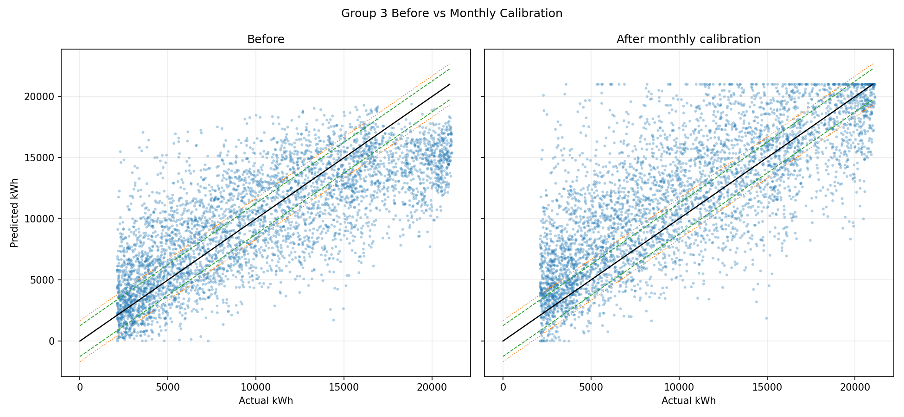
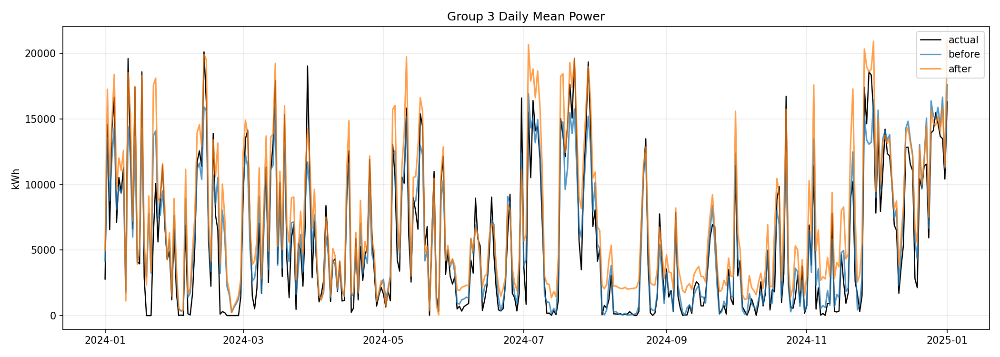

Monthly calibration can overfit validation months. Treat this as a diagnostic and use conservative checks before final submission.
| metric | before | after | delta |
|---|---|---|---|
| Total score | 0.622339 | 0.641937 | 0.019598 |
| 1-NMAE | 0.873326 | 0.871711 | -0.001615 |
| FICR | 0.371352 | 0.412162 | 0.040810 |
| Group 3 NMAE | 0.140619 | 0.145464 | 0.004845 |
| Group 3 FICR | 0.279476 | 0.401907 | 0.122431 |
| month | scale | bias |
|---|---|---|
| 1 | 1.420 | -1900.0 |
| 2 | 1.260 | -100.0 |
| 3 | 1.140 | 900.0 |
| 4 | 1.320 | -500.0 |
| 5 | 1.420 | -1800.0 |
| 6 | 0.800 | 1200.0 |
| 7 | 1.170 | 1200.0 |
| 8 | 0.880 | 2000.0 |
| 9 | 0.900 | 1700.0 |
| 10 | 1.170 | 1100.0 |
| 11 | 1.270 | 2000.0 |
| 12 | 0.840 | 1900.0 |



